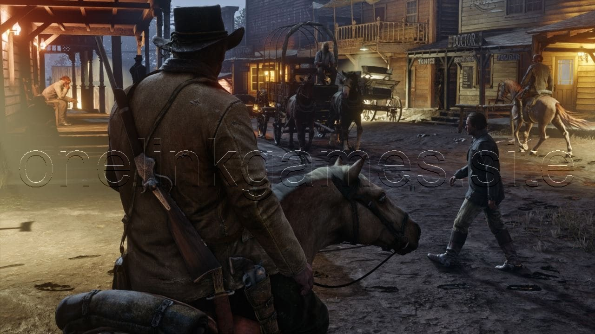
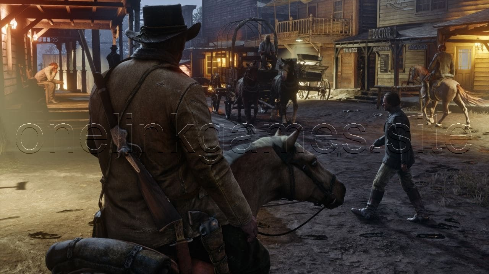

Red Dead Redemption 2
Setup Size = 122.2 GB
Platforms: PlayStation 4, Windows, and Xbox
About This Game
With an array of fresh graphical and technical enhancements to provide a deeper level of immersion, Red Dead Redemption 2 for PC fully harnesses the PC's power to breathe life into every nook and cranny of this vast, intricate world. These improvements encompass heightened draw distances, elevating the player's ability to see far into the distance, and an elevated level of global illumination and ambient occlusion, enhancing the quality of lighting during both day and night. The game also showcases improved reflections and richer, higher-resolution shadows that are visible at all distances. Tessellated tree textures and enhanced grass and fur textures contribute to a heightened sense of realism in the flora and fauna. Additionally, Red Dead Redemption 2 for PC incorporates HDR support, enabling a more vibrant and lifelike visual experience. It empowers gamers to explore high-end display setups with resolutions reaching 4K and beyond, facilitating multi-monitor configurations, widescreen setups, and faster frame rates. These enhancements collectively elevate the gameplay to an entirely new level.
Screenshots


 

System Requirements
- Requires a 64-bit processor and operating system
- OS: Windows 10
- For AMD-based systems: AMD Ryzen 5 1500X or a more powerful AMD CPU.
- For Intel-based systems: Intel Core i7-4770K or a more powerful Intel CPU.
- Memory: 12 GB RAM
- NVIDIA Graphics Card: NVIDIA GeForce GTX 1060 with 6GB of VRAM or a more powerful NVIDIA GPU.
- AMD Graphics Card: AMD Radeon RX 480 with 4GB of VRAM or a more powerful AMD GPU.
- DirectX: 12
- Storage: 150 GB available space
- Sound Card: Direct X Compatible